Arithmetic, geometric, and harmonic means¶
Terms are in harmonic progression if their reciprocals are in arithmetic progression.
Almost all harmonic progression problems are solved by studying the arithmetic progression of the reciprocals.
Arithmetic mean¶
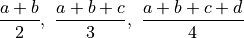
Geometric mean¶
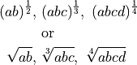
Harmonic mean¶
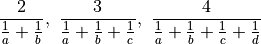
Inequalities¶
For positive real numbers only:
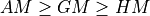
The equalities happen when the numbers whose mean is being taken are equal
AM-HM looks like
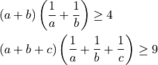
AM-GM looks like
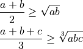
Applications¶
For any two variables  and
and  , when the sum is fixed, the product is maximum when ; when the product is fixed, the sum is minimum when .
, when the sum is fixed, the product is maximum when ; when the product is fixed, the sum is minimum when .
For a rectangle, the area is the product of the sides and the perimeter scales as the sum of the sides. Thus, for a fixed perimeter, the area is maximum when the rectangle is a square. For a fixed ares, the perimeter is minimum when the rectangle is a square.
Given that  and
and  are positive real numbers related by
are positive real numbers related by
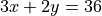
, what is the largest value that and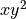
can take?Part 1:
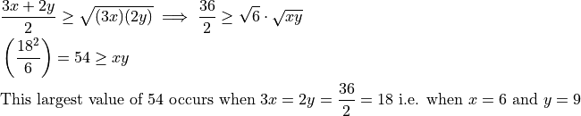
Part 2:
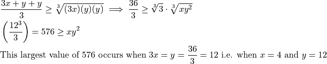
We will now look at a couple of advanced examples. If we are dealing with power of two variables and  , the AM-GM inequality has the general form
, the AM-GM inequality has the general form
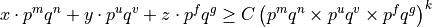
We have lumped all numerical constants into  and written the appropriate power as
and written the appropriate power as  . Our applications will not require and . Hence, the lumping. , , and are numbers (not variables).
. Our applications will not require and . Hence, the lumping. , , and are numbers (not variables).
For example,
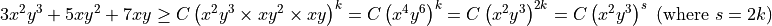
Advanced example:
What should be the ratio of the height to the radius of a cylinder if for a fixed total surface area of the cylinder (including the two caps), the volume of the cylinder is maximum?
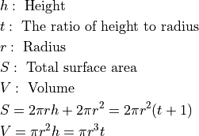
We want to vary the two knobs  and such that
and such that  is fixed and
is fixed and  is maximized. We can ignore the constant multiples in the analysis.
is maximized. We can ignore the constant multiples in the analysis.
For fixed
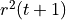
, maximize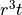
.An attempt at applying AM-GM inequality (ignoring any numerical constant multipliers on the left) gives us
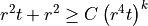
The problem is that we need some power of on the right hand side. The above inequality does not give us that. We have
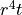
.Next, let us try splitting either the first term or the second term (on the left hand side) needs to be split into a certain number of equal parts.
First try to split the second term into two equal parts (still ignoring numerical constants on the left. Hence no 1/2 multipliers).
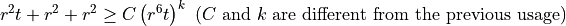
We have
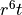
, not .Next, split the first term into equal parts.
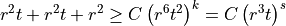
This time, we have our combination.
Now, we write the left hand side including the numerical multipliers in the correct ratio.
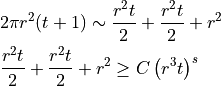
The right hand side will take the maximum value when the terms on the left hand side are equal. The first two terms are already equal by choice. Thus, the first and the third terms need to be equal.
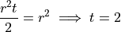
Therefore, the volume is maximized when the height is twice the radius.
Advanced example:
The volume of a right triangular prism is V. The base of the prism is an equilateral triangle. What must be the side of the equilateral triangle for the total surface area of the prism to be the least?
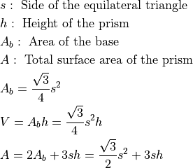
In this problem is fixed. Thus,
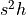
is fixed. The objective is to minimize . The terms in the sum here (ignoring numerical constants) are
. The terms in the sum here (ignoring numerical constants) are 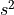
and .Following the same strategy as the preceding problem, we are looking for the combination on the right hand side.
The split that will give us this combination is
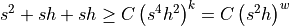
Including the numerical multipliers in the correct ratio,
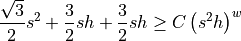
For fixed right hand side, the left hand side will take minimum value when the left hand side terms are equal. The second and third terms are already equal. We need to equate the first two terms.
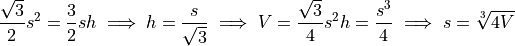